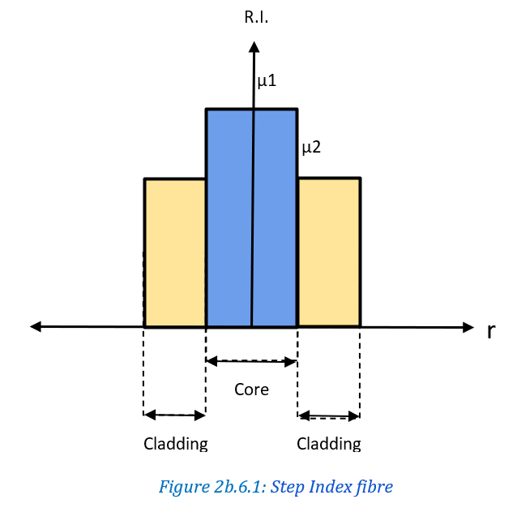

LASERS
Full form of LASER is Light Amplification by Stimulated Emission of Radiation.
| Light Laser Source | Ordinary source |
|---|---|
| Monochromatic in nature. | Polychromatic in nature. |
| Highly focused has low divergence hence very intense. | Highly divergent hence diffuse because intensity decreased due to spreading. |
| Laser light is directional, it is emitted in one direction. | Emitted in all directions. |
| eg. Nd-YAG laser, He- Ne | eg. candle, LED, bulb |
Q2a.2. Explain main three processes involved in production of LASER with appropriate diagrams. (M.U. Dec 2006, 12; May 2009) (7m)
Radiation consists of photons and Matter consists of atoms and molecules. Thus, Interaction of radiation with Matter means interaction of photons with atoms and molecules. The three processes that coexist at all temperatures whenever radiation interacts with matter are absorption, emission and stimulated emission.
Absorption:
The transition of atoms from lower energy ground state E1 to a higher energy excited state E2 after acceptance of an incident photon is known as stimulated absorption as shown in Figure 2a.2.1. The incident photon should be of energy .
Absorption can be expressed as
Where, A = atom in ground state and A* =atom in excited state.
Spontaneous Emission:
If an excited atom returns to the ground state on its own accord by releasing an energy equivalent to E= hv = E2 – E1 , then the process is known as
spontaneous emission as shown in Figure 2a.2.2 . It can be expressed as A* => A + hv
Stimulated Emission:
If an atom in the excited state E2 returns to the ground state E1 in presence of an external photon of energy hv=E2– E1 giving out another photon of same energy the process is called stimulated emission as shown in Figure 2a.2.3. It can be written as A* + hv => A + 2hv.
Characteristics of stimulated emission:
• The emitted photon and the incident photon are identical in all respects and have the same frequency.
• Both photons travel in the same direction.
• Multiplication of photons takes place in the process.
Q2a.3. Explain the terms population inversion, Active medium, meta stable state, pumping.(M.U. Dec. 2008,09,10,17) (8m)
Population inversion: Every system in nature tries to achieve minimum potential energy. Thus, naturally majority of atoms in every system lie in the ground state and a very few are present in excited state, this is called the natural population. In order for the stimulated emission to occur we require majority of atoms to be present in the excited state and very few in the ground state i.e., just inverse of the natural population. Once this condition is achieved. The state of population inversion is said to be achieved.
Active medium: The medium in which light gets amplified is called active medium. It may be solid, liquid or gases. Out of all atoms present in medium only few are responsible for stimulated emission and consequent light amplification, they are called active centres.
Meta stable state: : The state which has energy in between that of ground state and excited state is called meta stable state. This is a partially stable state. The life time of atoms is in between their respective life time is ground state and excited states.
Pumping:: To obtain and maintain a state of population inversion atoms have to be raised continuously to excited state. It requires energy to be supplied to the system. The process of supplying energy to the medium with a view to transfer it into the excited state is pumping. Techniques for pumping are,
1.Optical pumping: Light source used for pumping.
2.Electric pumping: Electric field is applied to medium producing ionisation creating excitation.
3,Chemical pumping:When chemical reaction is used for excitation.
Q2a.4. Derive expression for Einstein’s coefficients.
Consider a two level laser system with ground state and excited state
Let and be the numbers of atoms in and respectively. Let Q(x) be the density of photons incident on this system two level laser system. Letthe probability absorption i.e. the probability of atoms to get excited to state be denoted by ''. This probability will depend on number of atoms in the ground state''and the density of photons ‘Q’ and can be written as:
Probability of stimulated absorption:
The probability of emission will have two terms, one corresponding to stimulated and other corresponding to spontaneous emission. Let the total emission probability be denoted by ''. This can be written as :
Probability of emission:
The probability of spontaneous emission i.e. atoms to go to ground state without stimulus is
The probability of stimulated emission i.e.
Using equation (2) and (3) we get,
Here , Q are constant coefficients.
At Equilibrium the probability of absorption i.e atoms going from to will be equal to the probability of emission i.e.atoms coming back from to
Therefore,
Putting Equation (1) and (4) in (5) we get:
After simplifying the above equation for Q we obtain:
Maxwell distribution gives the relation between and , it is given as:
Using (7) in equation (6) we have:
Planck’s law gives us the expression for energy density given as:
Comparing equation (8) and equation (9) we get expressions:
And
Where ,, are called Einstein’s coefficients.
Q2a.5. Describe action of resonant cavity.(M.U. May 2012) (3 m)
When stimulated emission is generated in medium it has to be sustained in the desired direction and suppressed in remaining direction. This goal can be achieved by resonant cavity. Resonant Cavity consist of two oppositely facing parallel mirrors with active medium placed in between them as shown in Figure 2a.5.1.
The action of such a cavity can be explained as follows:
1. Ground state: Initially active centres are in ground state as shown in Figure 2a.5.2.
2. Optical pumping: By optical pumping the material is taken to a state of population inversion as shown in Figure 2a.5.3.
3. Spontaneous and stimulated emission: Spontaneous occur in random direction and they thus produce stimulated emission as shown in Figure 2a.5.4.
4. Optical feedback: Due to reflecting mirrors photons in favourable direction are feedback as shown in Figure 2a.5.5.
5. Light amplification: Feedback from mirrors combined with stimulated emissions will lead to light multiplication and then light amplification.
6. Light oscillation : Light beam in the cavity begins to oscillate when the amount of amplified light becomes equal to the total amount of light lost through the sides of the resonator as shown in Figure 2a.5.5. Then waves propagating in the cavity take the standing wave pattern. If L is the length of the cavity.
A resonator may support several standing waves of slightly different wavelength, these are called longitudinal modes. Each mode has distinct frequency () as in equation (1).
Q2a.6. Explain the working of He-Ne laser along with Principle.
(M.U. May 2007, 08, 13, 15, 18; Nov. 2018; Dec. 2007, 14, 15)
Principle: Gas lasers employ electrical pumping of gas mixtures where electron impact excites A gas . Then A gas molecules transfer their energy in collisions to B Gas molecules that are the actual active centres. It can be expressed as
Note: A* is metastable state and B* is excited state.
Construction :
He- Ne laser comprises of long and narrow tube that is filled with He and Ne gas in the ratio 10:1 at a pressure of 1 mm of mercury. Tube length is 50cm and 1cm in diameter .Electrodes are provided to produce discharge in the gas and they are connected to a high voltage power supply .Tube ends are sealed at ends using silica windows inclined as brewsters angle. This tube is placed in between two minorset one is fully reflecting other is partially reflecting. This forms the resonant cavity of He-Ne laser as shown in Figure 2a.6.1.
Working :
He-Ne laser employs a four level pumping scheme. When the power (10kV) is switched on , the electric field ionizes the gas atoms and ions move towards oppositely charged electrode . Electron lighter in weight hence gain higher velocity and He atoms excited more readily because they are lighter in weight .
time creating population inversion. He atoms get excited to F2 and F3 from F1 where F2 and F3 are metastable state where atoms remain for a longer
Ne energy states E6 and E4 are very close to metastable states of F2 and F3 of He atom. Thus when He collides Ne atom, resonant transfer of energy takes place.
He* + Ne => He + Ne*
Population increases rapidly in E6 and E4. Thus population inversion takes place in E6 and E4 with respect to E5 and E3 as shown in Figure 2a.6.2
image
three main transitions are
1. E6-E5 of 3.39 µm in IR region not visible.
2. E6-E3 of 6328 A0red color visible.
3. E4-E3 of 1.15µm in IR region not visible.
Atoms in E3 collected undergo spontaneous emission to reach E2 .E2 is a metastable state in Neon .So, there is a chance of accumulation of atoms in this state.The atoms in E2 are de-energized by keeping diameter of the discharge tube small . So that number of collisions with the tube walls takes away energy of atoms in E2 and they rapidly reach ground state to get excited to E6 and E4 again. The discharge is maintained continuously thus this cycle of events continues , giving out a continuous laser output.
Q2a.7. Explain Nd-YAG laser, Principle, construction and working.
(M.U. May 2011,12; Dec 08,09,19) (8m)
Principle:Optically pumped Nd-YAG rod inside the resonant cavity undergoes stimulated emission and light thus produced gets amplified in the cavity to produce Nd -YAG laser.
Construction:Nd-YAG assembly consists of an elliptically cylindrical cavity that has Nd-YAG rod along if one focal axis and Xenon flash lamp at the other as shown in Figure 2a.7.1b.
The cavity is silvered internally so that light leaving the lamp at one focus meets the rod at other focus after every reflection. Thus, light is focused on the rod. Two ends of the rod are polished and silvered for resonator formation as shown in Figure 2a.7.1a.
Working:As shown in Figure 2a.7.2 the energy level of Nd. E1 is the ground state and E3 is the metastable state. Light in the range 5000-8000 A0 is used to pump the Nd +3 ions that act as active centres to higher states.
E3 is the metastable state that gets rapidly populated due to downward transitions from higher energy levels as none of them is metastable. Thus population inversion takes place between E3 and E2. Thus by resonant cavity action with help of pumping a Continuous laser of 1.06 µm in IR region is given out between E3 and E2.
Q2a.8. Explain semiconductor diode laser on the basis of principle , construction and working .
Principle: When a current higher than a Threshold value is passed in a forward bias on junction that is basically doped it emits a laser that is called semiconductor diode laser.
Construction:A diode is heavily doped for the purpose of being used as a semiconductor diode laser. The semiconductor diode is of the order 1mm in size. The front and the rear ends of the diode are polished perpendicular to the junction in order to create a resonator cavity. The thin junction here acts as the active region as shown in Figure 2a.8.1.
Working:A heavily doped pn junction is forward biased. This puts fermi level within conduction band. So, on heavily doped p side the acceptor levels enter with into the valence band creating holes in valence band. Zero bias condition is shown at the top of the adjoining Figure 2a.8.2. When a forward bias is applied zero bias changes to the condition shown below, electrons injected into depletion region hence it's holes appear in lower region. Low forward bias current causes spontaneous emissions of photons at the junction due to electron hole pair recombination. When the forward bias current increases threshold value carrier concentration increases to very high value. The narrow region where this is achieved is called active region. Forward bias current plays the role of pumping agent in diode lasers. eg. In GaAs laser light of 9000 A° in IR. GaAsP in visible region red colour 6500 A°. Diode laser are simple, efficient low power compact, less monochromatic and highly temperature sensitive.
Q2a.9. Write a note on Holography.
(M.U. May 2007; Dec. 2007, 10, 11, 16) (5 m)
A Photograph records a two-dimensional record of a three-dimensional scene where the information of the third dimension is lost. While a hologram is the three-dimensional record of a three-dimensional scene. Thus, the hologram is "holos" which means "complete" and “gram” that means a “record” in greek.
The process of creating a 3D image “Hologram” is called holography it has two main stages namely recording and reading they are described as follows:
Recording hologram:
A broad LASER beam is incident on the object to be recorded. The wave scattered from object called the object beam is made to interfere with a coherent unscattered wave (reference beam) to obtain interference pattern that becomes the record of phase information i.e. 3rd dimension.
The hologram thus obtained is similar to the image as in case of photograph. On the contrary, it consists of alternate bright and dark bands (interference pattern) that have phase information to give additional 3rd dimension information as shown in Figure 2a.9.1.
Reading a hologram:
When hologram is illuminated by the reconstruction two waves are produced. One appears to diverge from the object and provides virtual image of the object and second converges to form real image as shown in Figure 2a.9.2.
2a.9.2. When hologram is illuminated by the reconstruction two waves are produced. One appears to diverge from the object and provides virtual image of the object and second converges to form real image as shown in Figure 2a.9.2.
(M.U. May 2007, 19) (3 m)
| Photograph | Hologram |
|---|---|
| 2D representation of the object. | 3D representation of the object |
| The negative resembles the object. | The hologram is just an interference pattern that does not resemble object. |
| Ordinary light is used for photography. | Laser light is used for holography |
| Photograph reading is not encoded | Hologram reading is encoded with the wavelength of the light used for recording it. |
FIBRE OPTICS
Q2b.1. Explain the phenomenon of Total internal reflection. (M.U. May 2009; Dec. 2013, 14, 15) (3 m)
When a ray of light suffers refraction at a boundary while travelling from a rarer medium to a denser medium, it bends towards the normal as shown in Figure 2b.1.1a.
Similarly, if a ray of light travels from a denser medium to a rarer medium, it bends away from the normal as shown in Figure 2b.1.1b. In both the cases angle of refraction (r) increases with increase in the angle of incidence (i). When the ray of light is travelling from denser medium towards the rarer medium similar to the case as shown in Figure 2b.1.1b, then the angle of incidence for which the angle of refraction becomes 90° is called the critical angle of incidence as shown in Figure 2b.1.2a.

When the angle of incidence increases further the refracted ray does not enter the rarer medium and is reflected back to the denser medium . Thus, when a ray of light is travelling from the denser medium towards the rarer medium is incident at the boundary with an angle greater than the critical angle , the ray of light instead of getting refracted to the rarer medium gets reflected back to the denser medium.
This phenomenon where light is reflected into the denser medium, is called Total Internal Reflection as shown in Figure 2b.1.2b.
Optical fibres are long thin hair like cables made of plastic or glass to electric light along their length. An Optical fibre generally has three co-axial regions as shown in Figure 2b.2.1.
- Core: The innermost region of nearly 50µm in diameter which is optically dense as compared to cladding is called core.
- Cladding:The region surrounding the core with 125 µm diameters which is rarer as compared to core is called cladding.
- Sheath:The outermost skin of optical fire to protect it from external damage is called sheath.
Q2b.3. Why is cladding required when light travels through core only?
Cladding is required as:
- It enhances the mechanical strength of fibre.
- Protects core from surface contamination.
- Reduces scattering loss at the core.
Q2b.4. Derive expression for acceptance angle of an optical fibre. (M.U. Dec. 2002, 05,07,08,11,12,15, 16: May 2013, 15) (5 m)
The maximum angle of incidence for which the light incident on the core propagates successfully through the fibre is called acceptance angle ">
Consider a step index optical fibre with core of refractive index and cladding of refractive index placed in air which has refractive index µ0 as shown in Figure 2b.4.1.
For a ray of light that is travelling from air to core the relative refractive index can be written as:
For a ray of light that is travelling from core to cladding the relative refractive index can be written as :
Applying Snell’s law of refraction at the air – core interface:
Using (1a),(3) and for air we get:
Applying Snell’s law of refraction at the core-cladding interface:
Using (1b),(5) and we get:
Using ,(4) and (6) we get:
Numerical Aperture: Sine of acceptance angle is called Numerical Aperture.
Thus the expression for acceptance angle is :
Acceptance Cone: The solid angle made by the acceptance angle in all directions is called acceptance cone all light incident in this cone propagates through the fibre successfully.
Q2b.5. Distinguish between single mode and multimode fibres.(M.U. Dec 2009; May 2013) (3 m)
| Single / Mono mode fibre (SMF) | Multi-mode fibre (MMF) |
|---|---|
| Support only one mode of propagation | Support more than one mode |
| Core diameter is small | Core diameter is large |
| Usually step index type | Further divided as step index and graded index |
Q2b.6. Differentiate between SI fibre and GRIN fibre. (M.U. Dec 2003, 05, 10, 16; May 2013, 15) (5m)
| Step index optical fibre | Graded Index optical fibre |
|---|---|
| Discontinuity of index profile at core cladding junction. | R.I. of core decreases gradually to attain R.I. of cladding at core-cladding. |
| R.I. of core is constant. | R.I. of core decreases nearly in parabolic manner. |
| High attenuation. | Low attenuation. |
| For a given diameter the Numerical Aperture (N.A.) is greater. | For a given diameter the Numerical Aperture (N.A.) is lesser compared to SI. |
|  |
Q2b.7. Describe fibre optic communication system. (M.U. Nov. 2018) (5m)
Transfer of information from one place to another is called communication. For communication to occur a system should consist of following three main parts as shown in Figure 2b.7.1:
- Transmitter (T)
- Receiver (R)
- Channel for propagation of information from (T) to (R)
Fibre optic communication system is specialized in a sense that the information propagates in the form of light and hence the transmitter and receiver in this type of system has additional components to support this modification. A block diagram for a typical optical fibre communication system is shown in the figure below.
Principle Elements of typical Fibre optical communication system are:
- Input Device:A typical input device would be a Telephone or mike in case of a voice input to be transmitted across the channel to the receiver.
- Encoder:This is the special device in the Receiver that converts light from the optical fiber to electrical signal. Eg. Photodiode.
- Optical transmitter: This is the special device in the transmitter that converts electrical signal to light and launches it appropriately to propagate through the optical fibre. E.g. LED.
Optical Fibre:This is the three-layered fibre consisting of a core-cladding interface covered in a sheath. The information propagates through the core in the form of light due to the phenomenon of total internal reflection in a zig – zag manner.- Optical receiver:This is the special device in the Receiver that converts light from the optical fiber to electrical signal. Eg. Photodiode.
- Decoder:This block collects the signal from the Optical receiver, removes the high frequency carrier as and when required and converts electrical signal from the optical receiver into a user understandable output (Audio).
- Output Device:A typical output device would be a Telephone or speaker in case a voice output is expected at the receiver end.
- Repeater:A typical amplification device suitable for long distance communication through optical fibres.
Q2b.8. What are the advantages of using fibre optic communication systems? (M.U. May 2008, 16, 17; Dec. 2012) (3m)
The advantages of using a fibre optic communication system are:
- Greater Bandwidth: Fibre optic cables provide more bandwidth than copper cables of the same diameter, in carrying more data.
- Faster Speeds: Fibre optic cables have a centre that carries light to transmit data. This allows fibre optic cables to carry signals at a faster pace.
- Better Reliability : Fibre optic cable is immune to temperature changes, severe weather and moisture, all of which can hamper the connectivity of copper cable. Plus, fibre doesn't carry current, so it’s not bothered by electromagnetic interference (EMI) which will interrupt data transmission.
Thinner and Sturdier: In comparison to copper cables, fibre optic cables are lighter and thinner. They are also less susceptible to breakage and can also withstand a higher amount of pull and pressure.- Lower Total Cost of Ownership: Although some fibre optic cables may have a better initial cost than copper, the sturdiness and reliability of fibre can make the entire cost of ownership (TCO) lower. Day by day costs continue to decrease for fibre optic cables as technology advances.